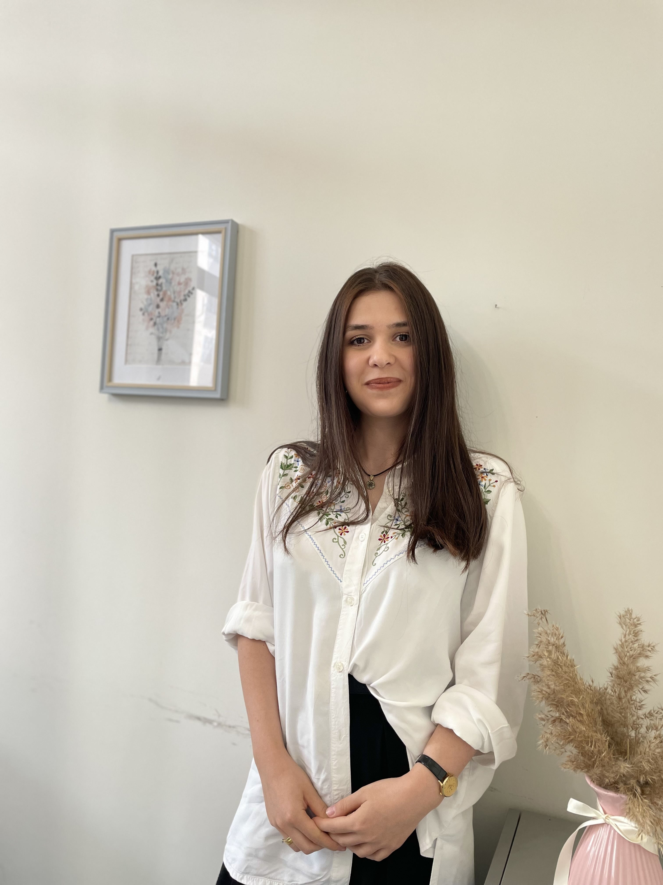
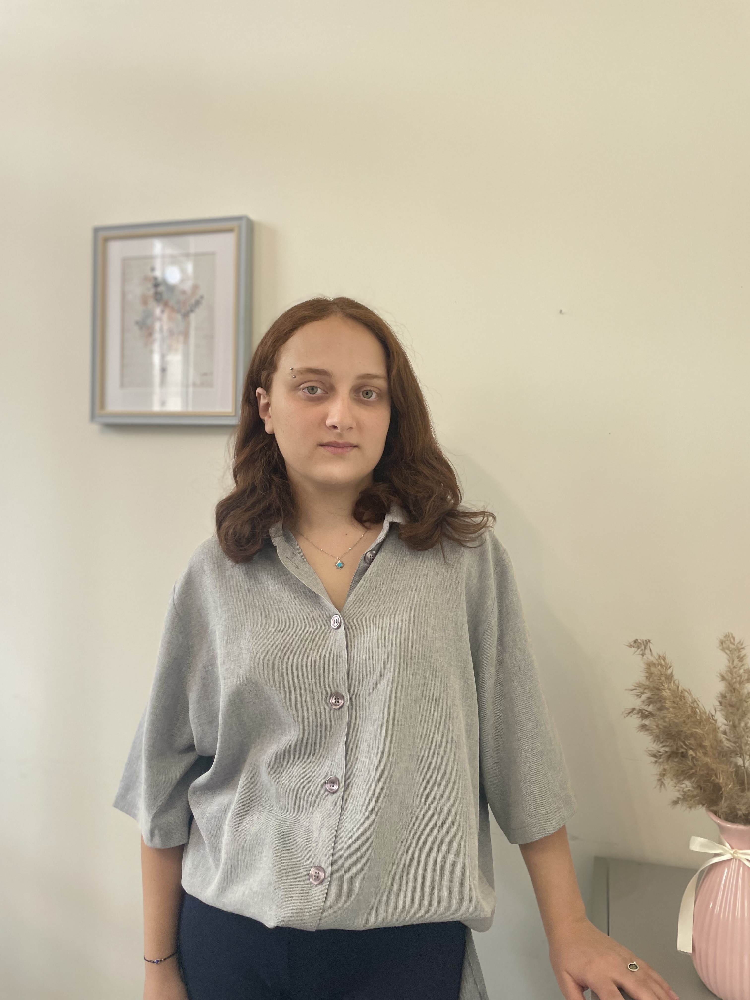
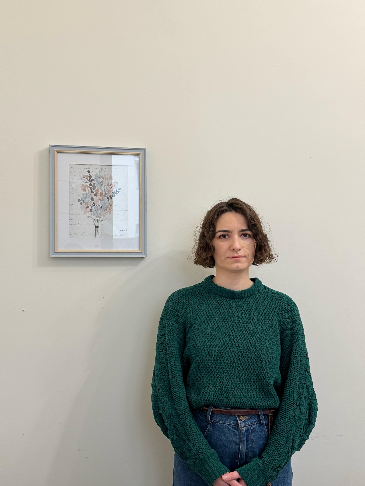

"კარპე დიემ"-ის გუნდის წევრები

ხატია ფიცხელაური
ბავშვთა გეშტალტ თერაპევტი

მარიამ გოჩაშვილი
არტ თერაპევტი

ნინო მჟავანაძე
ბავშვთა გეშტალტ თერაპევტი

მარიამ ნეფარიძე
მეტყველების თერაპევტი

ქეთი აბულაძე
ადრეული განვითარების სპეციალისტი
ხატია ფიცხელაური
ბავშვთა გეშტალტ თერაპევტი
- განათლება
- ილიას სახელმწიფო უნივერსიტეტი - კლინიკური ფსიქოლოგიის მაგისტრი
- ილიას სახელმწიფო უნივერსიტეტი - გამოყენებითი ფსიქოლოგიის ბაკალავრი
- სამუშაო გამოცდილება
- პიროვნული განვითარების ცენტრი "კარპე დიემ“ - ბავშვთა გეშტალტ თერაპევტი (2024წლიდან-დღემდე)
- კრიზისული ინტერვენციის სამსახური (2020-2024 წ.) - ფსიქოთერაპევტი
- ბავშვთა განვითარების ცენტრი „სპექტრუმი“ - ფსიქოლოგი/განვითარების სპეციალისტი
- ვაიოლეტ ოკლანდერის სახელობის ბავშვთა და მოზარდთა გეშტალტ თამაშით თერაპიის ინსტიტუტის პროგრამა „გეშტალტ თამაშით თერაპია ბავშვებთან და მოზარდებთან“ – 2023 წლიდან
მარიამ გოჩაშვილი
არტ თერაპევტი
- განათლება
- ილიას სახელმწიფო უნივერსიტეტი - კლინიკური ფსიქოლოგიის მაგისტრი
- ილიას სახელმწიფო უნივერსიტეტი - გამოყენებითი ფსიქოლოგიის ბაკალავრი
- სამუშაო გამოცდილება
- პიროვნული განვითარების ცენტრი "კარპე დიემ“ - არტ თერაპევტი (2023 წლიდან-დღემდე)
- "ბავშვის განვითარების ინსტიტუტი" - ტრენერი;
- "ბავშვის განვითარების ინსტიტუტი" - მოწვეული ფსიქოლოგი (2014 წლიდან-დღემდე)
- ილიას სახელმწიფო უნივერსიტეტი - მოწვეული პედაგოგი;
- ორგანიზაცია "კარავი"- ქეის მენეჯერი.
ნინო მჟავანაძე
ბავშვთა გეშტალტ თერაპევტი
- განათლება
- ილიას სახელმწიფო უნივერსიტეტი - განათლების ფსიქოლოგიის მაგისტრი
- ივანე ჯავახიშვილის სახელობის თბილისის სახელმწიფო უნივერსიტეტი - ბაკალავრის ხარისხი სამართალმოცდნეობაში
- სამუშაო გამოცდილება
- პიროვნული განვითარების ცენტრ "კარპე დიემ“ - ბავშვთა გეშტალთ თერაპევტი (2024 წლიდან-დღემდე)
- პიროვნული განვითარების ცენტრ "კარპე დიემ“ - ფსიქოლოგი/ტრენერი (2019 წლიდან-დღემდე)
- „კარპე დიემ“-ის საზაფხულო და საზამთრო ბანაკი - ორგანიზატორი (2020 წლიდან-დღემდე)
- „კარპე დიემ“-ის საზაფხულო და საზამთრო ბანაკი - ლიდერების ტრენერი (2020 წლიდან-დღემდე)
- საბავშვო ბაღი „WonderWell“ - მენეჯერი (2022 წლიდან - 2025 წლამდე)
- საბავშვო ბაღი „WonderWell“ - 3-6 წლამდე ბავშვების პროგრამის შემუშავება და აღმზრდელების გადამზადება (2022 წლიდან - 2025 წლამდე)
- სპეციალური საჭიროების მქონე ბავშვებთან მუშაობის 3 წლიანი გამოცდილება
მარიამ ნეფარიძე
მეტყველების თერაპევტი
- განათლება
- ილიას სახელმწიფო უნივერსიტეტი - კომუნიკაციის, ენისა და მეტყველების მაგისტრი
- სამუშაო გამოცდილება
- პიროვნული განვითარების ცენტრ "კარპე დიემ“ - მეტყველების თერაპევტი (2023 წლიდან-დღემდე)
- ორგანიზაცია "კომუნიკატორი" - ენისა და მეტყველების თერაპევტი
- მოწვეული ლექტორი/პრაქტიკის სუპერვიზორი - ილიას სახელმწიფო უნივერსიტეტი.
ქეთი აბულაძე
ადრეული განვითარების სპეციალისტი
- განათლება
- ილიას სახელმწიფო უნივერსიტეტი - კლინიკური ფსიქოლოგიის მაგისტრი
- ილიას სახელმწიფო უნივერსიტეტი - გამოყენებითი ფსიქოლოგიის ბაკალავრი
- სამუშაო გამოცდილება
- პიროვნული განვითარების ცენტრ "კარპე დიემ“ - ადრეული განვითარების სპეციალისტი (2024 წლიდან-დღემდე)
- "საქართველოს პორტიჯის ასოციაცია"-ადრეული განვითარების სპეციალისტი/თერაპევტი (2015 წლიდან-2023 წლამდე )
- "საქართველოს პორტიჯის ასოციაცია" - ადრეული ინტერვენციის სუპერვაიზერი/ტრენერი (2017 წლიდან-დღემდე)
- "საქართველოს პორტიჯის საქართველოსა (GGPA) და ამერიკის (AGPA) ჯგუფური ფსიქოთერაპიის ასოციაციის წევრი
- სახელმწიფო მზრუნველობის ქვეშ მყოფი კოჯრის ბავშვთა სახლისა და და დუშეთის შშმ პირთა პანსეონატი - მოწვეული განვითარების სპეციალისტი (2019 წლიდან-2020 წლამდე)